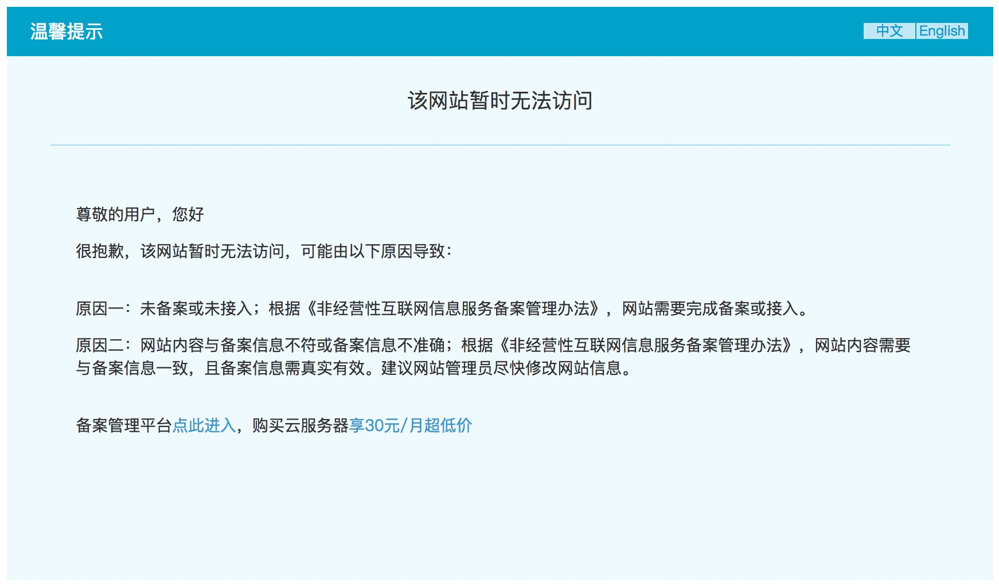

阿里云未备案云主机申请 letsencrypt ssl 证书
用阿里云国内机房的主机有个『小问题』，备案。下面说的，一种情况是没有备案，另外一种情况是备案中，但是业务急于对外发布，等不及以周为单位的备案进程。
访问绑定到阿里云 ECS 上的、没有备案的域名，阿里云机房会劫持你的 http（80 端口）上行流量，无视你实际的返回内容，将之篡改成一个页面 title 为『TestPage』的温馨提示（如下图）。

而一台不能提供 http 服务的阿里云 ECS 不是真正的服务器。解决这个问题的办法，将 http 换到 https 就可以了。
https 选哪家
总所周知，自从 WoSign 被我大天朝数字公司收购之后，颇多周折，跟同袍兄弟 StarSSL 一起被业界良心 chrome 拉黑。现在使用 WoSign 签发的 ssl 证书会被 chrome 直接判定为证书无效。
最近连商务范儿最重的 Symantec 都被 chrome 一再警告之后拉黑。除了认为 chrome 真任性之外，也提醒我们选择 ssl 服务商时一定要慎重。
目前来看，从个人到中小企业，最佳选择是 google 投资的 Let’s Encrypt。运用 ACME 协议自动签发、自动续期，技术宅最爱，不是技术宅也有现成工具简单操作即可。
怎么生成 http ssl 证书
首先注明，申请 Let’s Encrypt 家的 http ssl 证书，不需要提前准备啥资料，不需要书面申请，这跟国内的『管理』方法不一样。你只需要证明这个域名归你所有，http ssl 的证书就可以签发给你使用。但是为了防止域名到期易主、中途转让等等原因，发生域名新主人拿不到 http ssl 证书的情况，所以 Let’s Encrypt 规定了每次签发的 http ssl 证书有效期只有三个月，证书生成一个月之后可以免费重签/续期，不用等到临近有效期再续签。
Let’s Encrypt 验证域名的归属有两个办法，用过 Google Analytics，和用 G Suite 绑定过域名的朋友应该比较熟悉了。
- 网站验证。给你一个随机内容的文件，你把这个文件放在一个特定的位置，用待绑定的域名 + 特定 path 可以访问到这个文件，可以认为域名是你的；
- DNS 验证。给你一个随机字符串，你把这个字符串添加为待绑定域名某个 name 的 txt 值，只要能通过公网上的 DNS 服务器解析到这个字串，认为域名是你的。
很简单吧。
在阿里云 ECS 未备案的情况下，第一种办法是不可行的，chanlledge 必须是用过 http 协议进行的（你是来申请 https 证书的，假设你还没有 https 服务，这完全正常，只能用 http 来 chanlledge），而你的 http 服务被阿里云劫持了，所以你才要申请 http ssl 证书。…… 这就是个死循环。
第二种办法可行，它的具体步骤如下。
具体操作
我先把要注意的事项写下来，免得走弯路。 嗯，其实就一条：使用
pip install certbot命令安装 certbot，不要用 yum/dnf/apt/pkg/apk 等包管理工具安装。
第一步，安装 certbot
pip install --upgrade certbot
如果已经通过包管理工具安装过 certbot，那么先卸载。假设在 CentOS 上，包管理工具是 dnf。
dnf remove -y certbot
包管理工具安装的 certbot，其某些依赖包对应的版本比较低，存在兼容性问题，安装之后根本用不了。最好是用 pip 安装。
第二步，提出签发 http ssl 申请
certbot --text --agree-tos --email <your@email.com> -d <your.domain.com> --manual --preferred-challenges dns --expand --renew-by-default --manual-public-ip-logging-ok certonly
注意，这时候会出现类似下面的内容。
Please deploy a DNS TXT record under the name _acme-challenge.bristol3.pki.enigmabridge.com with the following value:
667drNmQL3vX6bu8YZlgy0wKNBlCny8yrjF1lSaUndc
Once this is deployed, Press ENTER to continue
上面的内容意思是：
- 背景：假设你申请 http ssl 的域名是
bristol3.pki.enigmabridge.com，你对这个域名有管理权； - 在上述域名下，设置名为
_acme-challenge的 txt 类型的记录，值为667drNmQL3vX6bu8YZlgy0wKNBlCny8yrjF1lSaUndc； - 如果上述记录是新建的，那么等待大约半分钟，回到命令行，点击回车继续。
第三步，获取 http ssl 证书
完成之后，在 /etc/letsencrypt/live/<your.domain.com> 目录下，有这么几个文件。
privkey.pem证书的私钥；fullchain.pem带完整认证链的证书。注意，说是 fullchain，其实 CA 是 letsencrypt 自家的 CA，在某些老的操作浏览器上仍然有 bug；chain.pemREADME 上面说法是给 nginx stapling 用的，其实里面就是 letencrypt CA 的证书；cert.pem域名的 http ssl 证书公钥。
第四步，安装
以 nginx 为例。（别问我为什么是 nginx，我最熟悉它，懒，你懂）
# 只贴出关于 ssl 的部分，其余部分就不贴了。
ssl on;
ssl_certificate /etc/letsencrypt/live/your.domain.com/fullchain.pem;
ssl_certificate_key /etc/letsencrypt/live/your.domain.com/privkey.pem;
# ssl_trusted_certificate /etc/letsencrypt/live/your.domain.com/fullchain.pem;
ssl_trusted_certificate ssl/letsencrypt_full_chained.pem;
ssl_stapling on;
ssl_stapling_verify on;
ssl_session_timeout 5m;
ssl_protocols TLSv1 TLSv1.1 TLSv1.2;
ssl_ciphers HIGH:!aNULL:!MD5:!EXPORT56:!EXP;
ssl_session_cache shared:SSL:50m;
ssl_dhparam ssl/dhparams.pem;
ssl_prefer_server_ciphers on;
其中，ssl/letsencrypt_full_chained.pem 是让 ISRG ROOT X1 给 letsencrypt X3 做一个交叉认证的认证链，这是 CA 之间经常使用的一种提高自身兼容性的办法。这个交叉认证证书用如下办法生成。
curl -Lo "${HOME}/lets-encrypt-x3-cross-signed.pem" \
"https://letsencrypt.org/certs/lets-encrypt-x3-cross-signed.pem"
curl -Lo "${HOME}/isrgrootx1.pem" \
"https://letsencrypt.org/certs/isrgrootx1.pem"
sed -i 's@\s*$@@g' "${HOME}/isrgrootx1.pem" # trip the carrige at the end of every line.
cat ${HOME}/lets-encrypt-x3-cross-signed.pem ${HOME}/isrgrootx1.pem > \
letsencrypt_full_chained.pem
PS: 上面的命令简单粗暴，原因是假设 certbot 生成的 fullchain.pem 里面有以下的规则。
- 域名 http ssl 都是由 letsencrypt CA 直接认证的，没有中间的 issuer；
- 签发证书的 letsencrypt CA 是 lets-encrypt-x3。
所以，当上面的配置出现错误时，快糙猛的办法是屏蔽掉『ssl_trusted_certificate』这行。 毕竟，在功能性面前，兼容性算个逑。
ssl/dhparams.pem 由以下命令生成。
openssl dhparam -out dhparam.pem 2048
配置完成之后，reload nginx 即可。
自此，阿里云 ECS 终于可以通过 https 协议访问了。舒心啦。